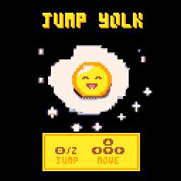

Colisiones: jugando en 8bits
Una muestra del Club de programación de la Red Colombiana de Humanidades Digitales
Diego Giraldo — Juan Álvarez Umbarila
Juan Felipe Urueña — Sergio Rodríguez Gómez
2022
Para crear videojuegos hace falta una mezcla variopinta de destrezas: la lógica y las convenciones de un lenguaje de programación específico; habilidades de diseño visual y sonoro; una arquitectura narrativa bien estructurada; y la visión para combinarlo todo en una experiencia interactiva suficientemente retadora y entretenida. Hay que abstraer mucho para volver una idea explícita, divertida e intuitiva, lo que al final del día se traduce en ponerse en los zapatos de otro u otra (quien juega) para ayudarle a salirse de su propia experiencia y a su vez ponerse en los zapatos de alguien más (un personaje de un mundo imaginado).
Esta pequeña muestra de videojuegos fue hecha por los miembros del club de programación de la Red Colombiana de Humanidades Digitales a lo largo de dos meses, en sesiones semanales, en la plataforma Pico-8, que usa el lenguaje de programación LUA.
Jump Yolk
Diego Giraldo
Eres una yema en apuros. Hay tenedores gigantes que te quieren reventar y si te quedas mucho tiempo fuera de las claras te quemarás. Evita todos los obstáculos moviéndote y saltando en el sartén por un minuto para que estés cocinada a la perfección ¡Yumi!
Movimiento: ↑ ↓ ← → Salto: Z
The Office game
Juan A. Umbarila
X
StarDust
Juan Felipe Urueña
¡Están lloviendo peces! Lyra debe encontrar a su cita. Ayúdala a pasar entre la lluvia que caen en todas las direcciones.
Movimiento: ↑ ↓ ← → Salto: X
Bloki
Sergio Rodríguez Gómez
¿Cuál será el último Bloki en mantenerse de pie en la plataforma? ¡Intenta hacer que el piso de tu contrincante se caiga y evita que se caiga el tuyo! Juego para uno o dos jugadores.
Controles:
Movimiento jugador 1: s e d f Movimiento Jugador 2: ← ↑ ↓ →